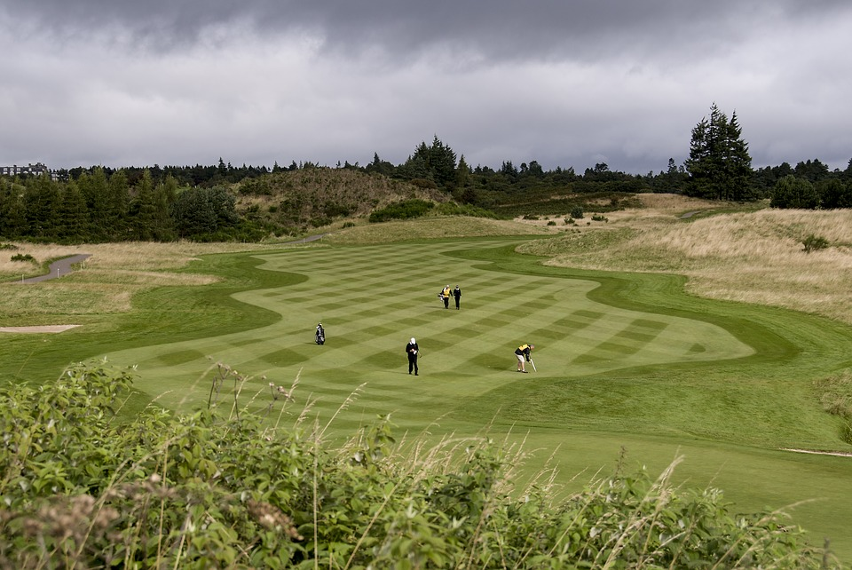
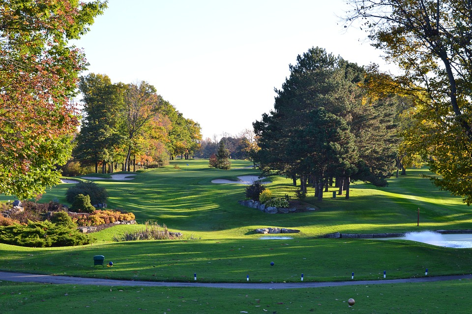
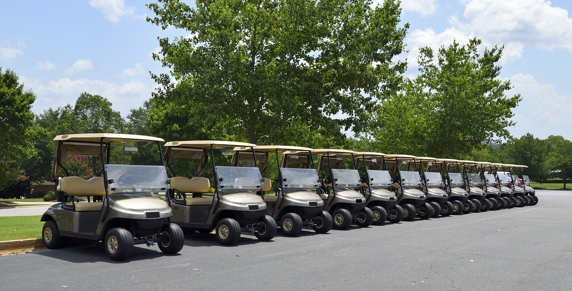

With the pristine course, and luxurious clubhouse, Maple Grove Country Club is the perfect place to hold your private event, whether for business or pleasure. With experience hosting an array of different amateur tournaments and private events, our staff is willing to go above and beyond to assist you and your guests. As the country club opens in April, below is our events schedule. Days that are already booked will be blocked off. If you have any questions about scheduling an event, please visit our contact page where you can get in contact with us.
At Maple Grove, the opportunity to earn a year of free golf and access to all of our ammenities, along with five different lessons with one of our course pros could be yours with the single swing of a club. The challenging par 3 16th hole plays from a distance of 246 yards from the champion tees. If one of our members hits a hole in one on this hole at any point throughout the year, they will earn a free membership for the upcoming year, along with the other prizes!
